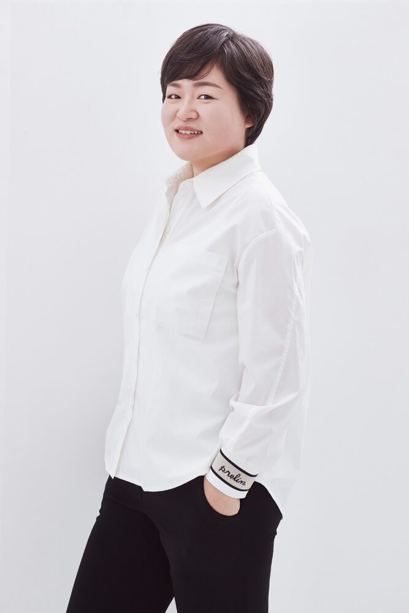

강사 프로필 · 자격 · 출강 이력
기관 담당자분들을 위한 요약 포트폴리오입니다. 인쇄하거나 PDF로 저장해 내부 검토 자료로 활용하실 수 있습니다. 이 페이지 하나의 주소를 기관에 그대로 전달하셔도 됩니다.

성향미
REAL 팀 리더 · 한국승강기대학교 선샤인융합학부 입시담당교수 · 국제웰니스교육협회·국제아로마임상협회 대표강사
사회복지사로 현장 경험을 쌓은 뒤 웰니스 분야 창업, 아로마 전문 강사 활동을 거쳐 현재 REAL 팀을 이끌고 있습니다. 자세한 경력과 교육 철학은 ABOUT 페이지를 참고해 주세요.
2018년 국회의원상(민홍철) 표창장(지역사회복지) 수상
학력
- 경남대학교 사회복지학(응용사회학) 학사
- 인제대학교 사회복지학 석사
- 동아대학교 국제전문대학원 글로벌다문화 전공 박사과정 재학 중
주요 경력
- 국제웰니스교육협회 대표강사 (2017.11~)
- 국제아로마임상협회 대표강사 (2019.08~)
- 한국항노화협회 이사 (2019.05~)
- 한국승강기대학교 선샤인융합학부 입시담당교수
자격 사항
| 취득일자 | 자격증명 | 발행처 |
|---|---|---|
| 2003.05 | 사회복지사 1급 | 보건복지부 |
| 2008.05 | 요양보호사 1급 | 보건복지부 |
| 2013.09 | TA상담사 | 한국교류분석상담학회 |
| 2018.08 | 천연아로마전문가 | 국제웰니스교육협회 |
| 2018.11 | 생활스포츠지도사 | 문화체육관광부 |
| 2019.01 | 웰니스코디네이터(걷기힐리스트·약초차힐리스트) | 한국항노화협회 |
| 2019.04 | 브레인 요가지도사 | 한국항노화협회 |
| 2019.07 | 운동영양지도사 | 한국항노화협회 |
| 2019.08 | 짐스틱국제강사 | Gymstick Muscle |
| 2020.04 | 국제아로마테라피스트 NAHA 레벨 1·2 | ROSEMONT AROMATHERAPY CENTER |
| 2021.04 | 컬러퍼스널리티 애널러시스카운셀러 1·2급 | IQCS(캐나다 SCC) |
| 2022.10 | 사회적경제전문인력 | 경상남도 교육과비전 |
| 2023.08 | 방과후미용(종합)지도사 | (사)국제뷰티산업진흥재단 |
| 2024.04 | 미용사종합면허 | 김해시장 |
| 2025.07 | 슬로우 조깅(베이직) | 슬로우조깅 코리아 한국지사 |
위 자격 목록은 2026년 강사 이력서를 기준으로 하며, 발급기관별 현재 유효 여부는 필요 시 증빙 서류로 추가 확인해드립니다.
제공 가능한 교육 분야
아로마 기초·감정아로마
아로마테라피의 기본 개념과 감정 케어에 아로마를 접목하는 과정입니다.
아로마터치
터치 기법을 활용해 몸과 마음을 함께 돌보는 실습형 교육입니다.
명상·싱잉볼·아로마 DIY
명상, 싱잉볼, 아로마 DIY를 결합한 체험형 웰니스 교육입니다.
전문강사 양성
아로마심리상담사 등 아로마융합케어 분야에서 강사로 활동하고자 하는 분들을 위한 과정입니다.
주요 출강 사례
2026년 강사 이력서에 기재된 실제 교육 실적 중 기관 유형별 대표 사례를 발췌했습니다. 전체 목록과 상세 일정은 문의 시 안내해드립니다.
| 교육과정명 | 교육 주관기관 | 교육대상·인원 | 시간 |
|---|---|---|---|
| 노인건강과 아로마테라피 | 경남복지정책연구원 | 일반 20명×4회 | 8H |
| 웰니스해양치유 프로그램(고성군) | 문화체육관광부·경상남도 고성군·경남대학교 | 공무원·일반·대사질환자 등 20명×2~5회 | 16~30H |
| 웰니스치유전문가 운동영양지도사 | 경남대학교 평생교육원 | 운동지도자 20명×2회 | 6H |
| 여성창업 컨설팅 | 창원여성인력개발센터 | 창업대상자 6명×4회 | 8H |
| 소통과 화합을 위한 팀빌딩 | 사회적협동조합 | 담당팀장 8명×2회 | 8H |
| 마인드 케어 데이 | 창원대학교 인제개발원 | 재학생 200명 | 5H |
| 학교현장에서 상담기법 | 창원교육지원청 위센터 | 담당자 50명×4회 | 8H |
| 유별난요리교실(하동초등학교 늘봄교실) | 창원대학교 | 참여자 40명×25회 | 100H |
| Branding Your Jab! | 부산보건대학교 | 재학생·교직원 200명 | 16H |
| 문화복지교육 아로마테라피 | 진주시 (대암마을) | 주민 120명 | 24H |
| 감정아로마테라피 | 한국수력원자력 고리원자력본부 | 임직원 45명 | 3H |
| 전문상담사 역량강화(아로마심리상담사 자격과정) | 밀양시성폭력가족폭력상담소 | 상담원 5명 | 9H |
| 소통과 긍정의 경남교육 | 경상남도교육청 | 지방공무원·행정직원 100명 | 4H+2H |
| 다년차 마을활동가 교육 | 경상남도마을공동체지원센터 | 마을활동가 20명 | 20H |
| 리더십 트레이닝 | 대구컨벤션센터 | 여성리더 30명 | 2H |
| 클릭!! 유어마인드 (청소년 감정교육 시리즈) | 창원남중학교·능동중학교 등 | 중·고등학생 다수 | 회당 2~3H |
시간·운영 방법
교육 시간, 구성 인원, 오프라인/온라인 운영 방식은 기관의 상황과 목적에 맞춰 협의 후 결정합니다. 표준 강의계획서는 문의 시 안내해드립니다.